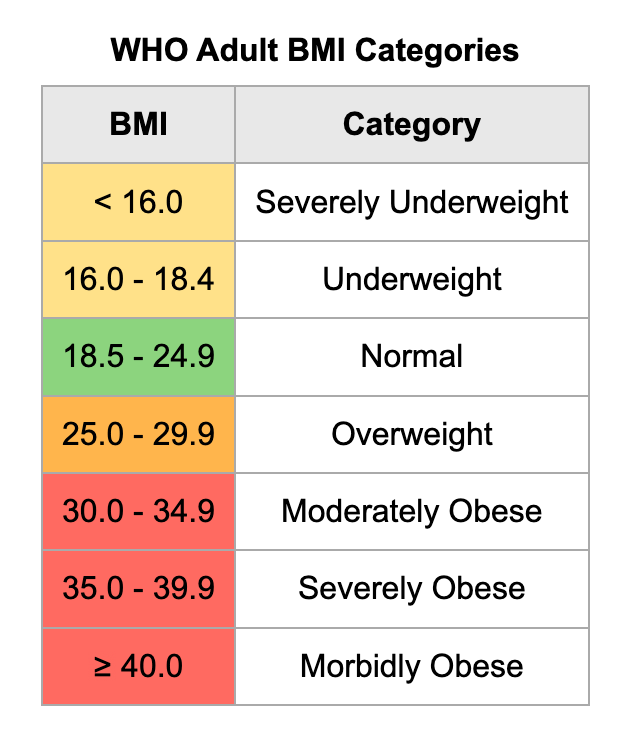

Hello
Welcome to Calculator Body Mass Index
Body Mass Index (BMI) is a person's weight in kilograms divided by the square of height in meters. A high BMI can be an indicator of high body fatness. BMI can be used to screen for weight categories that may lead to health problems but it is not diagnostic of the body fatness or health of an individual.
A high or low BMI may be an indicator of poor diet, varying activity levels, or high stress. Just because someone has a normal BMI does not mean that they are healthy.
BMI does not take account of body composition, for example, muscle, fat, bone density. Sex and other factors which can impact your weight can also lead to an inaccurate reading. As such a BMI calculation is not a suitable measure for some people including children and young people under 18, pregnant women and athletes
Interpretation:
Risks associated with being overweight
Being overweight increases the risk of a number of serious diseases and health conditions. Below is a list of said risks, according to the Centers for Disease Control and Prevention (CDC):
- High blood pressure
- Higher levels of LDL cholesterol, which is widely considered "bad cholesterol," lower levels of HDL cholesterol, considered to be good cholesterol in moderation, and high levels of triglycerides
- Type II diabetes
- Coronary heart disease
- Stroke
- Gallbladder disease
- Osteoarthritis, a type of joint disease caused by breakdown of joint cartilage
- Sleep apnea and breathing problems
- Certain cancers (endometrial, breast, colon, kidney, gallbladder, liver)
- Low quality of life
- Mental illnesses such as clinical depression, anxiety, and others
- Body pains and difficulty with certain physical functions
Generally, an increased risk of mortality compared to those with a healthy BMI As can be seen from the list above, there are numerous negative, in some cases fatal, outcomes that may result from being overweight. Generally, a person should try to maintain a BMI below 25 kg/m2, but ideally should consult their doctor to determine whether or not they need to make any changes to their lifestyle in order to be healthier.
Risks associated with being underweight
Being underweight has its own associated risks, listed below:
- Malnutrition, vitamin deficiencies, anemia (lowered ability to carry blood vessels)
- Osteoporosis, a disease that causes bone weakness, increasing the risk of breaking a bone
- A decrease in immune function
- Growth and development issues, particularly in children and teenagers
- Possible reproductive issues for women due to hormonal imbalances that can disrupt the menstrual cycle. Underweight women also have a higher chance of miscarriage in the first trimester
- Potential complications as a result of surgery
- Generally, an increased risk of mortality compared to those with a healthy BMI
In some cases, being underweight can be a sign of some underlying condition or disease such as anorexia nervosa, which has its own risks. Consult your doctor if you think you or someone you know is underweight, particularly if the reason for being underweight does not seem obvious.